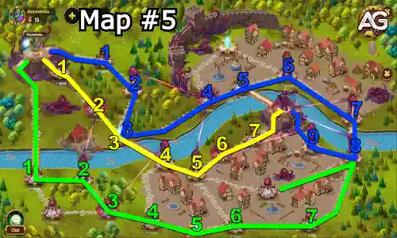
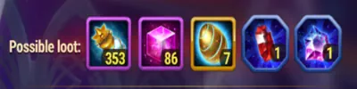

Poucos momentos em Hero Wars: Dominion Era são tão empolgantes quanto embarcar em uma Aventura de Mascotes. O Mapa 5, Cerco a Strongford, traz tanto nostalgia quanto pressão um desafio onde apenas o trabalho em equipe bem coordenado da guilda e o planejamento inteligente de rotas levarão você à vitória.
O desejo ardente de proteger Dominion e levar seus mascotes a novos limites começa aqui. Este guia ajudará você e seus aliados a navegar pelo mapa, derrotar o chefe fortalecido e conquistar recursos raros para mascotes.

O Mapa 5 oferece um desafio equilibrado que recompensa coordenação, timing e escolhas corretas de caminho. A batalha acontece em Strongford, cujas defesas estão sob cerco. Sua equipe deve romper esquadrões inimigos fortalecidos, neutralizar os bônus das torres e derrotar um chefe com múltiplos aprimoramentos. Escolha sua rota com sabedoria e confie em seus companheiros de guilda.
O Cerco a Strongford é um mapa para 3 jogadores, e cada um tem um papel essencial. Existem torres poderosas que fortalecem os esquadrões inimigos, e apenas derrotando essas torres você conseguirá enfraquecer seus inimigos. Coordene seus movimentos para que você e seus aliados destruam as torres corretas a tempo. Não se apresse espere os outros alcançarem os pontos de fortalecimento para avançarem estrategicamente.
Para derrotar o chefe, é preciso remover seus reforços derrotando os esquadrões marcados como Olho do Arauto. Esses reforços aumentam drasticamente o poder do chefe, então eles são sua maior prioridade. Lembre-se: quanto mais torres forem destruídas, mais fácil será a batalha final.

Entender a mecânica do chefe é essencial. Ele começa a luta com vários reforços poderosos que o tornam quase impossível de derrotar se não forem tratados corretamente. Esses reforços incluem:
Impulso do Chefe: Nível 70
Aumenta o dano causado em 100%
Reduz o dano recebido em 25%
Multiplica a Vida em 10x
Aumenta o ganho de energia em 100%
Reduz a duração de efeitos negativos em 80%
Nenhum ataque pode causar mais de 1% da Vida Máxima em dano
Imune a habilidades de redução de energia
Reforços Adicionais:
Resistência a Dano: Reduz o dano recebido em 65%.
Derrote o Esquadrão 20 (Olho do Arauto) para remover esse reforço.
Aumento de Dano: Aumenta o dano causado pelo chefe em 130%.
Derrote o Esquadrão 27 (Olho do Arauto) para remover esse reforço.
Outra Resistência a Dano: Reduz o dano recebido em mais 65%.
Derrote o Esquadrão 25 (Olho do Arauto) para remover esse reforço.
Derrotar os esquadrões Olho do Arauto nas posições 20, 25 e 27 é vital. Sem isso, o chefe permanece quase invencível. Após eliminar esses esquadrões, o chefe se torna gerenciável, mesmo com os reforços do mapa.
Leve heróis que causem dano consistente e aguentem lutas longas. Mascotes como Biscuit e Axel são excelentes por sua redução de cura e proteção. Khorus pode ajudar contra efeitos de controle, enquanto Fenris ou Cain aumentam o dano físico.
Comunique-se com seus companheiros de guilda. Use chat de voz ou texto para coordenar a destruição das torres, obtenção de reforços e estratégia contra o chefe. O timing é tudo.
O Cerco a Strongford, Mapa de Aventura 5, é onde o trabalho em equipe faz toda a diferença. Sua dificuldade não está na força individual, mas na execução sincronizada. Você vence ou perde com base em como sua guilda atua em conjunto.
Sempre destrua as torres antes de enfrentar os grandes esquadrões. Espere os aliados nos pontos de reforço. E o mais importante: enfraqueça o chefe eliminando seus esquadrões de apoio. Seguindo esses passos, a vitória e as recompensas valiosas serão inevitáveis.
Com 229 Poções de Mascote, 72 Partículas do Caos e valiosas Esferas e Pedras em jogo, o Cerco a Strongford vale o esforço. Prepare seus mascotes, reúna sua guilda e deixe seu legado se desenrolar!
Você gostou do nosso Guia do Mapa de Aventura de Mascotes #6 para Hero Wars Web e Facebook? Há algo que não entendeu ou gostaria de sugerir mudanças? Convidamos você a se juntar à nossa sessão de comentários na página do Alexandre Games Blog. Não hesite em expressar sua opinião, clarificar suas dúvidas e compartilhar sua sugestões.
Clique no botão abaixo para começar:
 Guia do Mapa de Aventura de Mascotes #6 para Hero Wars: Dominion Era
Guia do Mapa de Aventura de Mascotes #6 para Hero Wars: Dominion Era
 Guia do Mapa de Aventura de Mascotes #7 para Hero Wars: Dominion Era
Guia do Mapa de Aventura de Mascotes #7 para Hero Wars: Dominion Era
 Guia do Mapa de Aventura de Mascotes #8 – A Queda da Cidade Celestial
Guia do Mapa de Aventura de Mascotes #8 – A Queda da Cidade Celestial